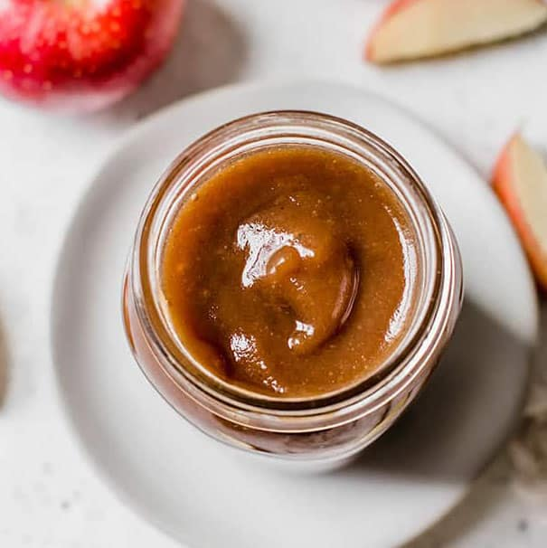

Apple Butter

A Delicious Condiment
Sweet and rich, this apple butter is a great condiment to have on hand.
It goes great with a cheese board, or just spread on toast to up the ante
during breakfast!
Ingredients
- 1200g simple syrup
- 500g apple, diced
- 120g strawberry jam
- 450g unsalted butter
- 10g silver leaf gelatin
- 12g sea salt
- 2g xanthan gum
Procedure
- Bloom gelatin in ice water
- In a saucepot, cook the apples in the simple syrup, covered, until tender
- Strain the cooked apples through a chinois and reserve both apples and liquid, seperately
- In a blender, combine the cooked apples, 350g of the reserved simple syrup,
strawberry jam, bloomed gelatin and salt and puree on high
- While blending, slowly add butter until fully emulsified
- Lastly, add xanthan gum with blender still on
- Strain the apple butter through a chinois and chill in an ice bath
to cool as quickly as possible
- Reserve cold in an airtight container